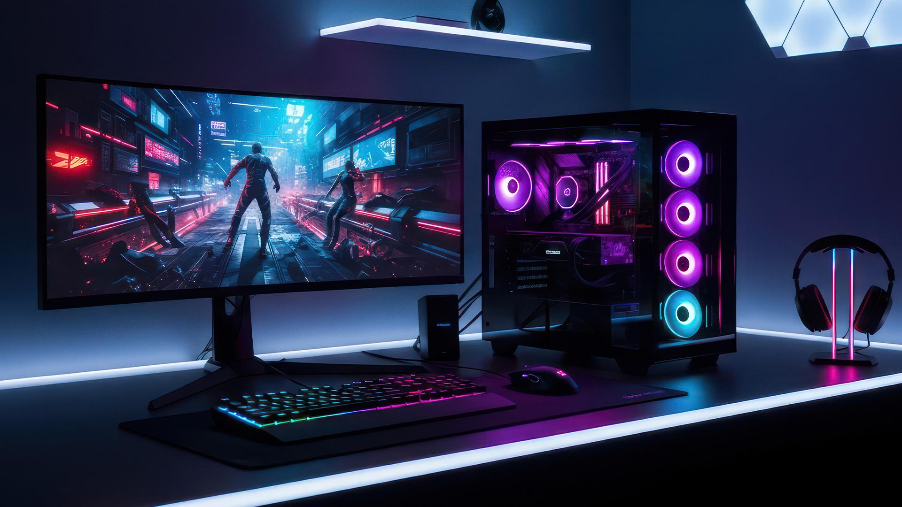

Bienvenido al mundo gamer

La tecnología ha transformado la manera en que jugamos, aprendemos y nos entretenemos. Los videojuegos, las computadoras y las consolas forman parte de una industria que avanza constantemente.
En GAME & TECH encontrarás información sobre videojuegos, equipos tecnológicos, accesorios y las últimas tendencias del mundo gamer.
Explorar catálogo¿Qué es la tecnología gamer?
Es el conjunto de dispositivos, programas y herramientas tecnológicas diseñadas para mejorar la experiencia de los videojuegos. Incluye computadoras de alto rendimiento, consolas, controles, monitores y otros accesorios.
Elementos esenciales del mundo gamer
- Computadoras gamer: equipos preparados para ejecutar videojuegos exigentes.
- Consolas: dispositivos como PlayStation, Xbox y Nintendo Switch.
- Tarjetas gráficas: componentes que procesan los gráficos de los videojuegos.
- Teclados y mouse gamer: accesorios diseñados para mejorar el control y la precisión.
- Monitores: pantallas que permiten disfrutar imágenes con alta resolución y fluidez.
¡Descubre nuevas experiencias!
Conoce diferentes productos tecnológicos y descubre cómo la innovación continúa transformando los videojuegos.
Visitar comunidad